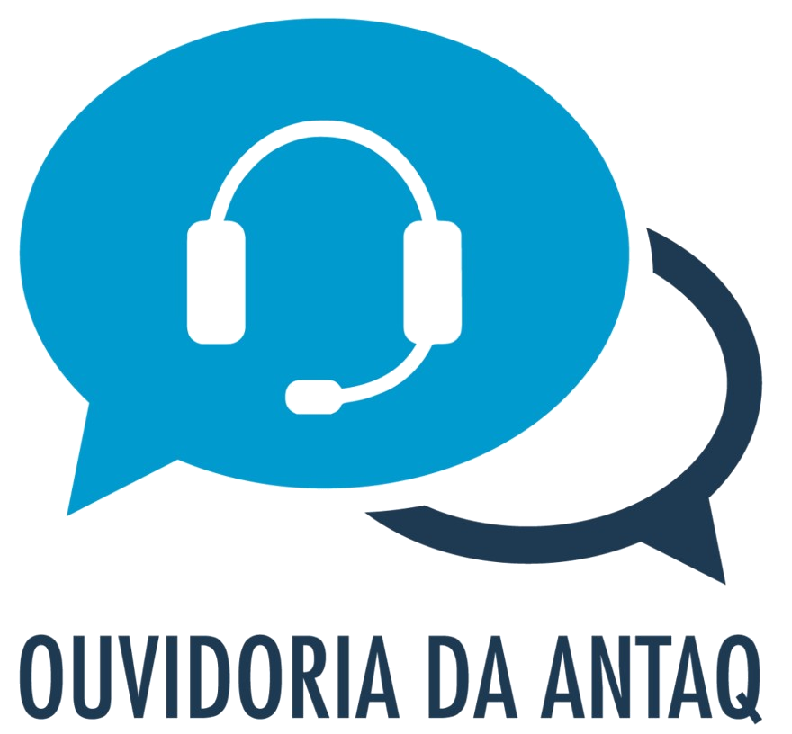

Ouvidoria
da ANTAQ
Selecione o conteúdo que deseja acessar
2026
Ouvidoria
3 relatórios
1º Trimestre/2026
Janeiro a Março
(abre em nova aba)
1º Semestre/2026
Janeiro a Junho
(abre em nova aba)
3º Trimestre/2026
Julho a Setembro
(abre em nova aba)
Conselho de Usuários
Enquetes
1 relatório
Relatório Anual de Enquetes 2026
Conselho de Usuários de Serviços Públicos da ANTAQ
(abre em nova aba)